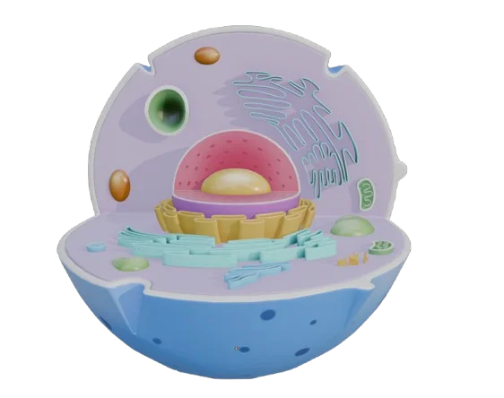

Animal
Célula Animal
Estructuras típicas: lisosomas y centriolos. Sin pared celular ni cloroplastos.
Núcleo
Mitocondrias
Lisosomas
Centriolos
Elige Célula Animal o Vegetal, mira sus componentes, aprende sus funciones y compárala con diferencias clave.
Estructuras típicas: lisosomas y centriolos. Sin pared celular ni cloroplastos.
Diferenciales: pared celular, cloroplastos y gran vacuola central.
Escanéame con tu cámara
Escanéame con tu cámara